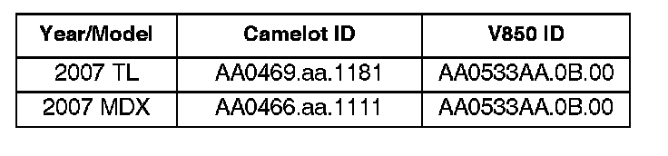
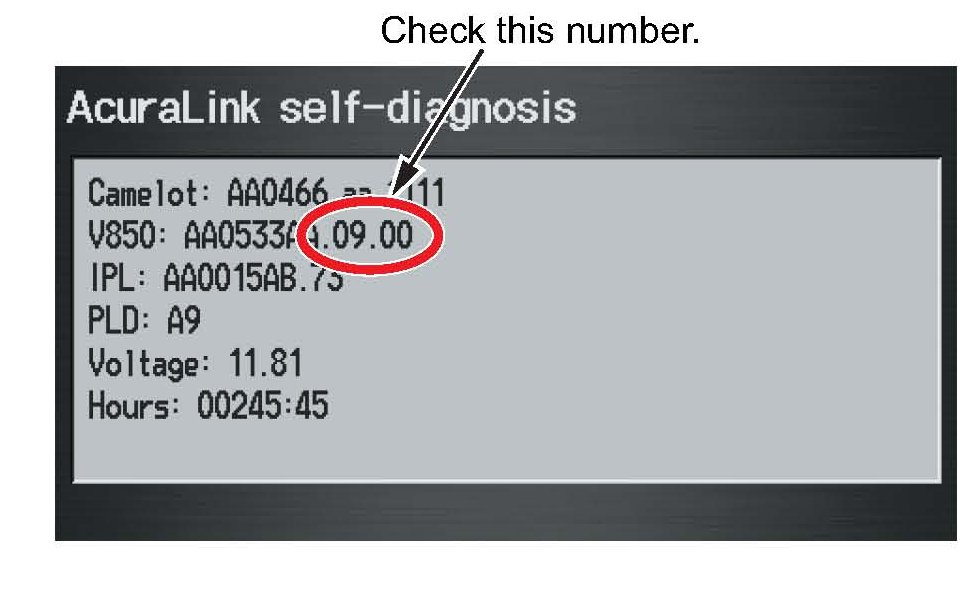

XM(R) Radio - No Sound/Delayed Song Title Display
07-038July 17, 2007
Applies To:
2007 MDX With Navigation - From 2HNYD28...7H500001 thru 2HNYD28...7H505910
2007 TL With Navigation - From VIN 19UUA...7A000001 thru 19UUA...7A003299
No Sound From XM(R) Satellite Radio or Delayed Song Title Display
SYMPTOM
The client may experience one or both of these intermittent symptoms:
^ The client turns the ignition switch to LOCK (0) while listening to XM Satellite Radio. When turning the ignition switch to ACC (I) or ON (II), there is no sound from the audio system, but the song title and artist information are still shown on the display. Sound resumes when you change the channel or audio mode, or when you activate HandsFreeLink.
^ When listening to XM, there may be a delay of up to 30 seconds after the song changes before the new song title and artist information are shown on the audio display.
PROBABLE CAUSE
The software in the AcuraLink control unit incorrectly initializes when turning the ignition switch to ACC (I) or ON (II).
CORRECTIVE ACTION
Update the XM software in the AcuraLink control unit.
NOTE:
The AcuraLink control unit has two functions and operates with two separate software programs:
Real-Time Traffic, which is the main program identified by the Camelot ID, and XM, which is the subprogram identified by the V850 ID. Both symptoms in this service bulletin are related to the XM software, so you will only update the V850 version.
SOFTWARE INFORMATION
HDS Software Version:
2.009.007 (brown CD) or later
AcuraLink Update Software Database Update:
24-APR-2007-HIP or later
NOTE:
^ If you use an earlier HDS software version or AcuraLink Software Database, the iN workstation may incorrectly indicate that the vehicle does not need an update when it actually does.
^ The AcuraLink Update Software Database is part of the HDS software. Not all HDS software versions include a new database update.

The updated AcuraLink sofiware program IDs are shown below. If both of the Camelot (main program) and V850 (subprogram) program IDs or later versions are the current IDs displayed (see DIAGNOSIS), the software for this bulletin is already installed in the AcuraLink control unit.
TOOL INFORMATION
iN Workstation (with the latest HDS software installed) GNA600 Kit:
P/N GNA600KIT
AcuraLink Reprogramming Cable Adapter:
P/N NUD420300H1P
NOTE:
^ The GNA600 kit (P/N GNA600KIT) has already been shipped to your dealership.
^ Replacement kits (P/N GNA600KITA) do not include:
- AcuraLink reprogramming cable:
P/N NUD420150H1P
- 256 MB PCMCIA Memory Card:
P/N 55DP25M3012
These parts are available through the Acura Tool and Equipment Program.
^ The GNA kit and the AcuraLink reprogramming cable adapter are available through the Acura Tool and Equipment Program.
WARRANTY CLAIM INFORMATION
In warranty:
The normal warranty applies.
Operation Number: 010306
Flat Rate Time: 0.5 hour
Failed Part: P/N 39820-STX-A42
Defect Code: 03217
Symptom Code: 03272
Skill Level: Repair Technician
Out of warranty:
Any repair performed after warranty expiration may be eligible for goodwill consideration by the District Parts and Service Manager or your Zone Office. You must request consideration, and get a decision, before starting work.
DIAGNOSIS
1. To determine if the AcuraLink control unit needs updating, check the current V850 software version in the AcuraLink control unit:
^ Turn the ignition switch to ON (II), and accept the navigation system disclaimer.
^ On the navigation system console, press the MAP/GUIDE, MENU, and CANCEL buttons simultaneously until the "Select Diagnosis Items" screen comes on.
^ On the navigation screen, select XM (HIP).
^ Select XM (HIP) ECU.
NOTE:
Do not select and change any of the other settings, or one or more systems may not operate properly.
^ Select AcuraLink self-diagnosis.

2. Check the V850 ID on the screen, and compare it to the program ID shown in SOFTWARE INFORMATION.
^ If the V850 ID is an earlier version (ends with 07.00, 08.00, 09.00, etc.), go to REPAIR PROCEDURE.
^ If the V850 ID is the program ID shown in SOFTWARE INFORMATION (ends with OB.00) or a later version (OC.00, OD.00, OE.00, etc.), refer to the appropriate service manual for normal troubleshooting.
REPAIR PROCEDURE
1. Test the vehicle battery with the ED-i 8 battery tester, and proceed only if the results are good (refer to service bulletin 88-016, Battery Test Procedure). If the battery is not in good condition or it dies during the updating procedure, you may damage the AcuraLink control unit.
2. Connect a battery booster to the battery. Do not use a battery charger.
3. Update the AcuraLink control unit sofiware with the GNA6OO. Refer to Service Bulletin 07-027, Updating the AcuraLink Control Unit
NOTE:
This procedure only updates the subprogram (V850). If you see a screen that indicates the main program is already the current program, continue to the next screen to update the subprogram.
4. Make sure the sofiware in the AcuraLink control unit was properly updated:
^ Turn the ignition switch to ON (II), and accept the navigation system disclaimer.
^ On the navigation system console, press the MAP/GUIDE, MENU, and CANCEL buttons simultaneously until the "Select Diagnosis Items" screen comes on.
^ On the navigation screen, select XM (HIP).
^ Select XM (HIP) ECU.
NOTE:
Do not select and change any of the other settings, or one or more systems may not operate properly.
^ Select AcuraLink self-diagnosis.
5. Check the V850 ID on the screen, and make sure it corresponds with the program ID shown in SOFTWARE INFORMATION (ends with OB.00).
^ If the V850 ID ends with OB.00, the updating procedure is complete.
^ If the ID is the same as the ID you read in DIAGNOSIS (07.00, 08.00, 09.00, or earlier), make sure you have the correct AcuraLink Software Database Update loaded into the iN workstation, and repeat the updating procedure.